Projets
Sélection de travaux — 2022–2026


semestre 8
à venir
semestre 9
à venir
semestre 10
à venir
Portfolio — 2026
Bienvenue dans mon univers créatif. Je suis Ines Mathlouthi, étudiante en architecture et je vous présente "Dār Studio" — mon portofolio numérique.
Sélection de travaux — 2022–2026
Photographies & visuels
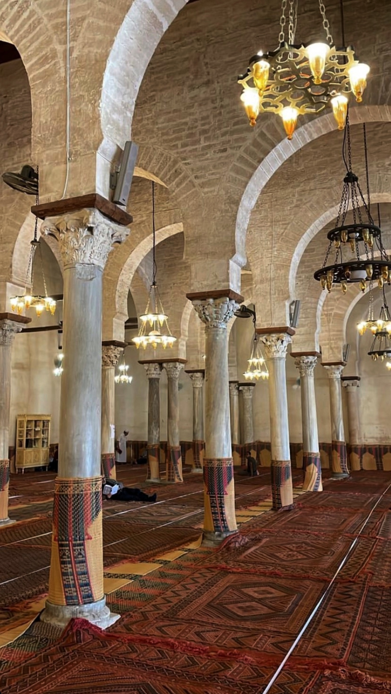
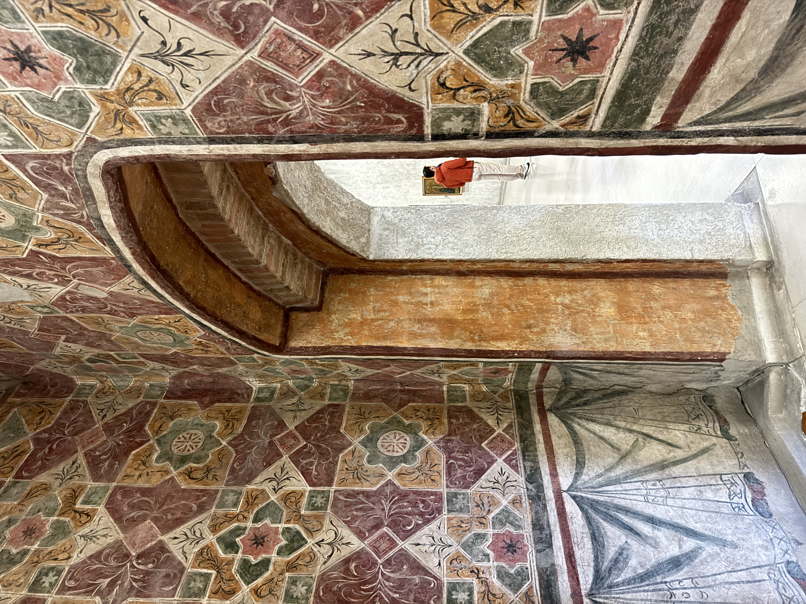
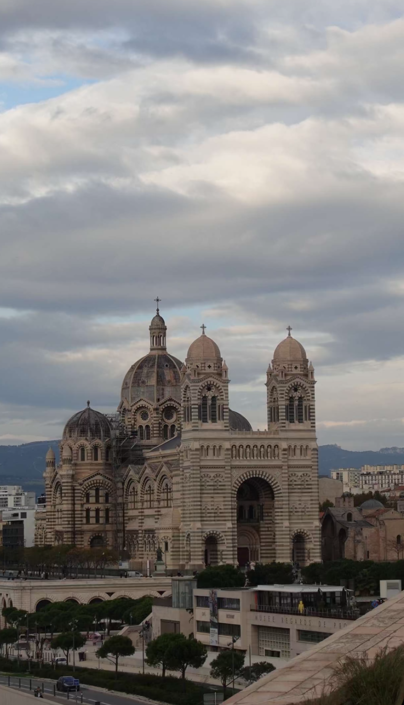
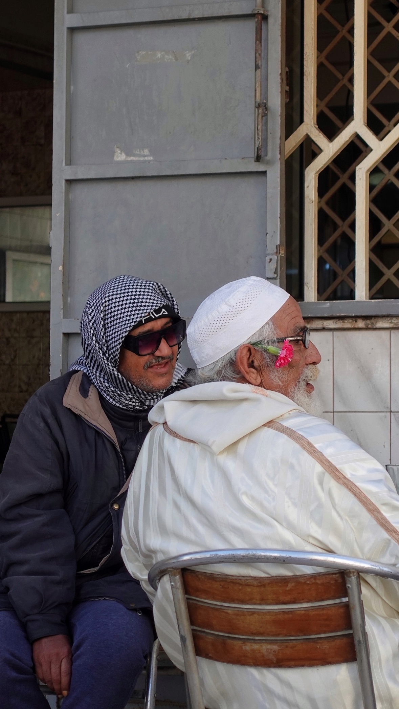

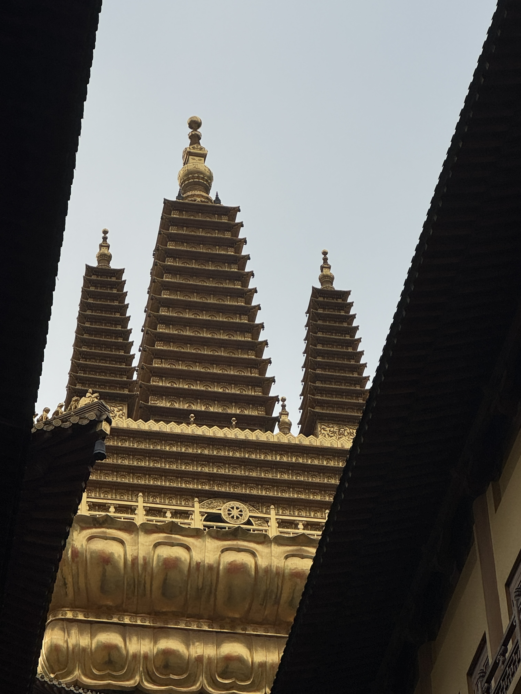
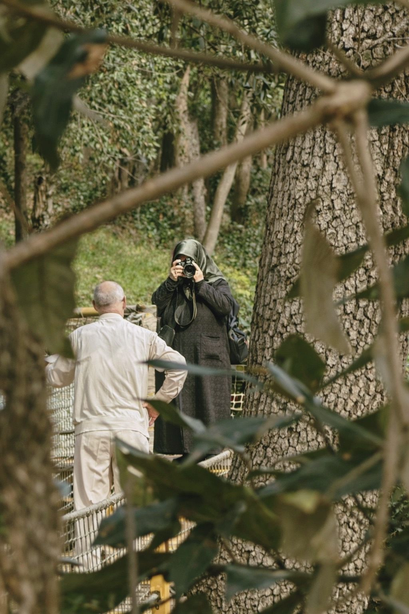
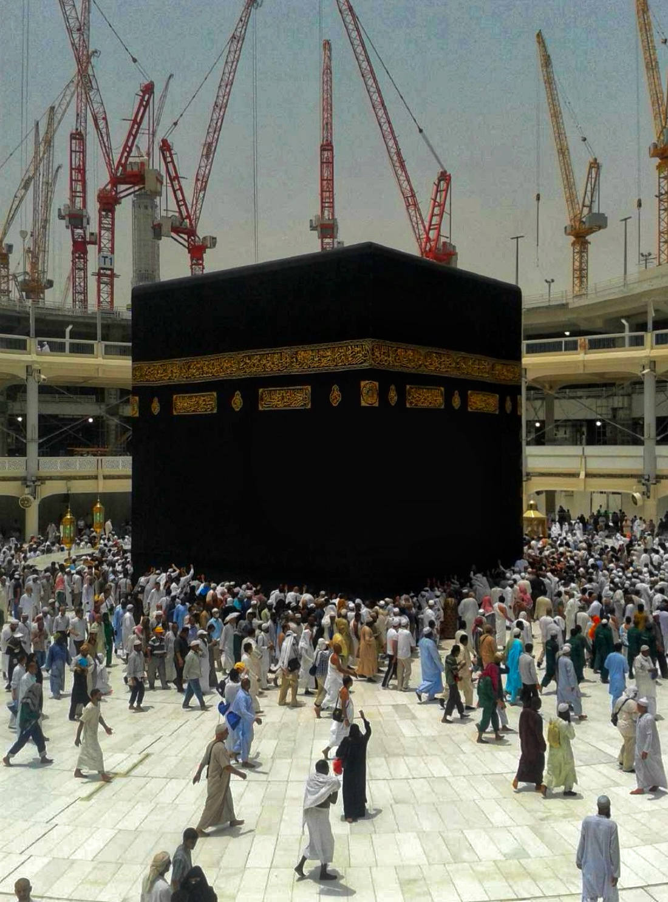
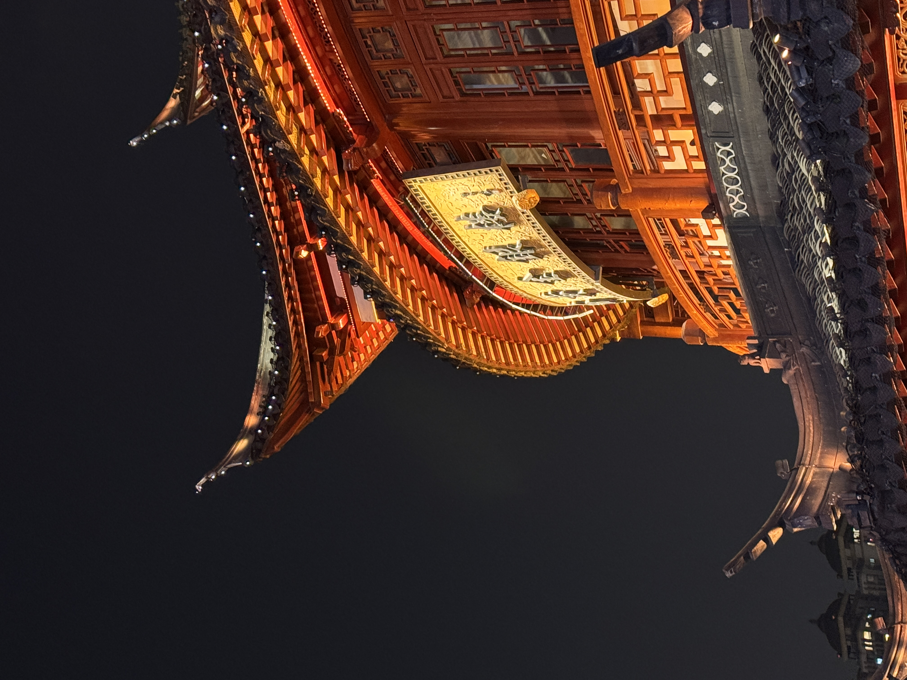
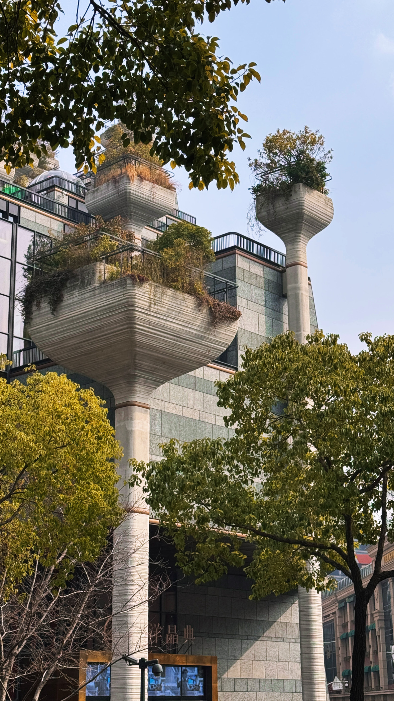


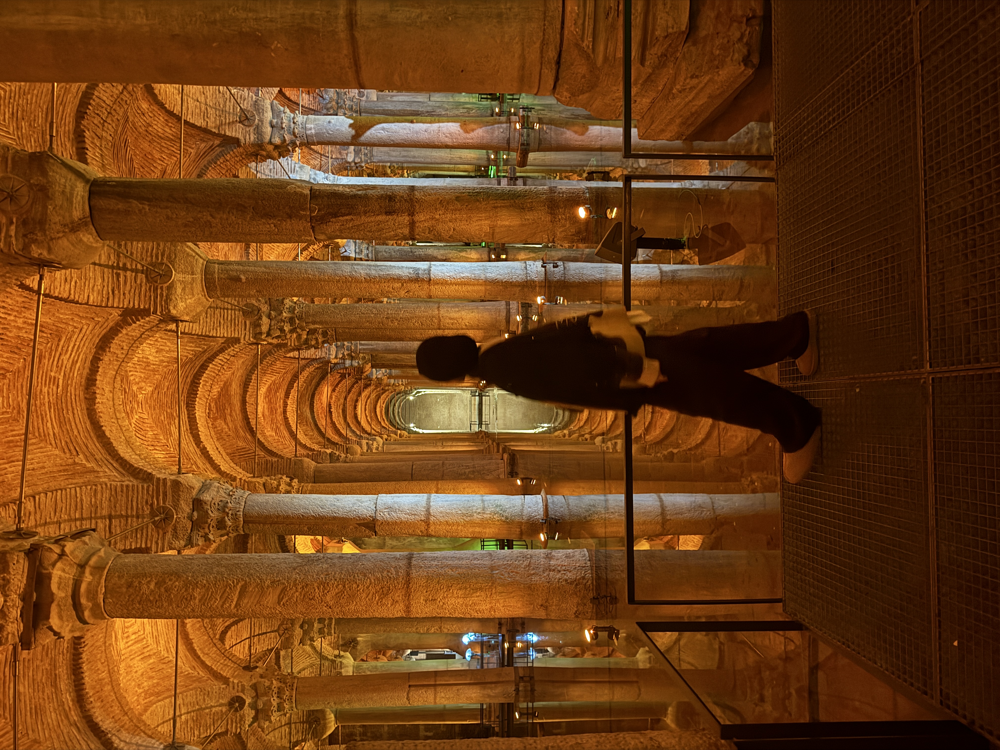

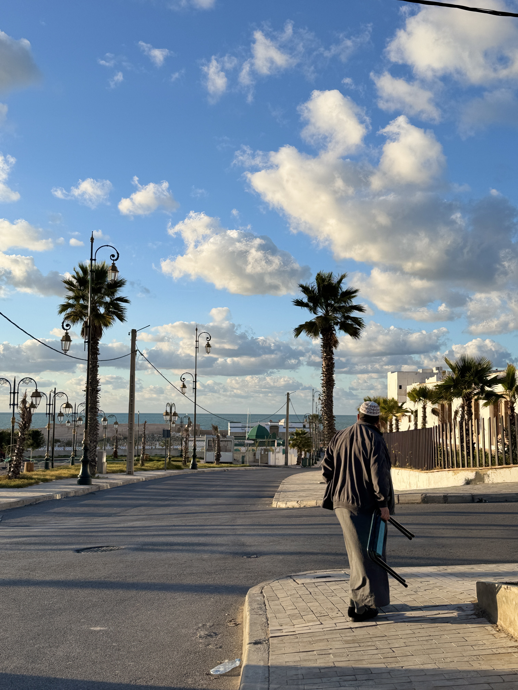
Travaux expérimentaux & compétences extra
Le film : Le Panier, Marseille semestre 4 - 2024 Dans le cadre d’un projet en arts plastiques, nous avons réalisé un court-métrage retraçant l’histoire du quartier du Panier à Marseille, en explorant comment les espaces urbains ont été occupés à travers les époques. Ce travail illustre les transformations sociales, culturelles et architecturales d’un lieu emblématique, en mettant l’accent sur la relation entre une personne et son environnement.
Portrait du docteur Félinet, 2021. Inspiré du Portrait du docteur Gachet, Van Gogh - peinture acrylique.
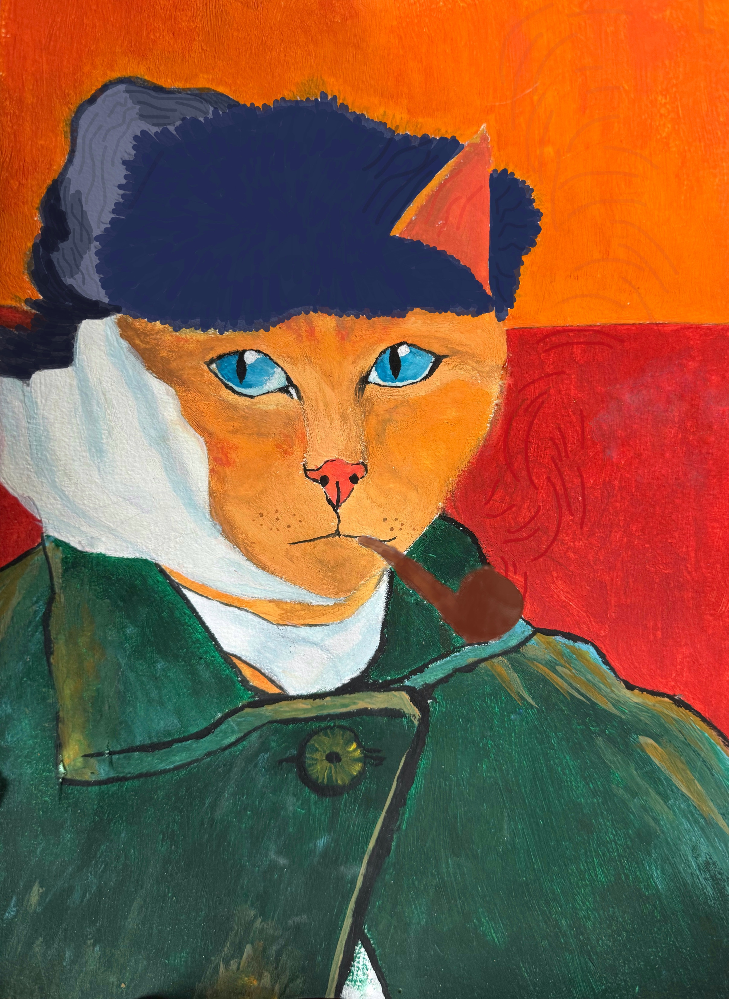
Collages numériques et recherches graphiques.
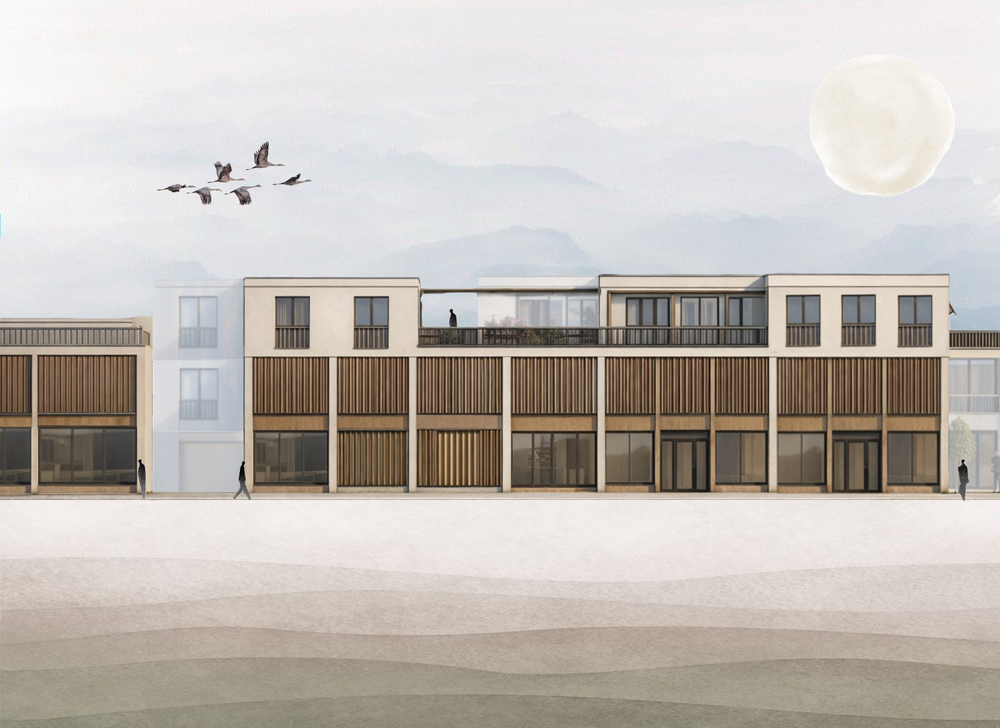
Exploration des motifs et de l'ornementation ottomane. (EN COURS)

Travail autour des textures, tapis et motifs textiles. (EN COURS)
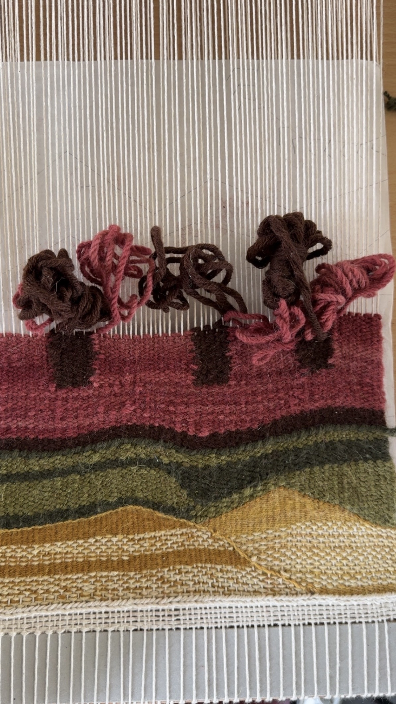
Parcours professionnel
Bonjour, je suis Ines Mathlouthi, future architecte à en devenir. Mon travail se situe à l'intersection de l'identité visuelle, de la photographie et de la direction artistique.
Je crois en des projets pensés avec intention où chaque choix porte un sens; c'est comme cela que je conceptualise. Dār, qui signifie « maison » en arabe, est l'espace que je me suis construit pour créer librement.
Actuellement à la recherche d'un stage en agence d'architecture d'une durée de deux mois, je serais ravie de pouvoir échanger avec vous ou d'étudier toute opportunité ! :)